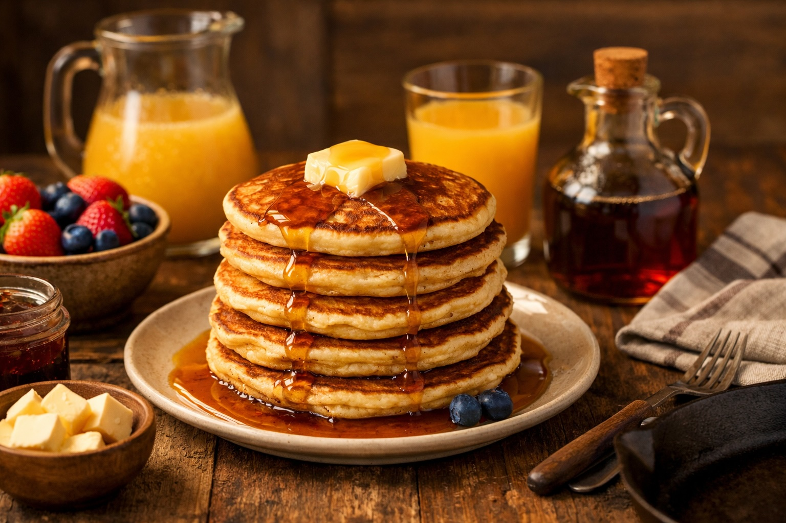

Whole Foods Recipes: Homemade Pancakes
Last updated: March 2026

A simple family pancake recipe made with whole ingredients instead of boxed mixes. The batter comes together quickly, cooks well on cast iron, and pairs naturally with real butter, maple syrup, fruit, and fresh orange juice.
- Whole ingredients win: the batter looks and tastes noticeably better than store mixes.
- Cast iron improves after the first pancake: once heat stabilizes, browning and texture become much more consistent.
- Do not overmix: a few lumps are fine and help keep the pancakes tender.
- Kid-approved: this version was rated better than previous store-mix pancakes.
Purpose
This recipe replaces processed pancake mixes with a simple whole-ingredient method using flour, eggs, milk, and butter. The goal is not complexity — it is a repeatable family breakfast built from ingredients that are easy to recognize and trust.
Ingredients
- 1 cup all purpose flour
- 1 tbsp sugar (optional)
- 1 tsp baking powder
- ¼ tsp salt
- 1 egg
- ¾ cup milk
- 1 tbsp melted butter or olive oil
- ½ tsp vanilla extract (optional)
Optional variations
- Banana pancakes: add ½ mashed banana to the batter.
- Berry pancakes: add blueberries or chopped strawberries.
- Higher-protein version: add one extra egg.
Equipment
- Mixing bowl
- Whisk or fork
- Cast iron pan or skillet
- Spatula
- Spoon or ladle
Method
- In one bowl, combine flour, baking powder, salt, and sugar.
- In a second bowl, whisk egg, milk, melted butter, and vanilla extract.
- Add the wet ingredients to the dry ingredients and stir gently until just combined. The batter should be thick but pourable.
- Heat a cast iron pan over medium heat and add a small amount of butter or oil.
- Pour about ¼ cup batter into the pan.
- Cook until bubbles appear on the surface, about 1–2 minutes.
- Flip and cook the second side for about 1 minute.
- Repeat with the remaining batter.
Total time
- Prep time: 5 minutes
- Cook time: 10–15 minutes
- Total: about 15–20 minutes
Serve with
- European butter
- Maple syrup
- Fresh fruit
- Fresh Squeezed Orange Juice
- Simple Fruit Smoothies
Notes
- Cast iron learning curve: the first pancake may cook unevenly while the pan stabilizes, but by the second or third pancake the process becomes much easier.
- Batter texture matters: if too thick, add a small splash of milk; if too thin, add a little flour.
- Do not overmix: overmixing can make pancakes tougher.
- Medium heat works best: too much heat can brown the outside before the inside is ready.
Personal note
After switching to whole ingredients, the batter looked noticeably better than store mixes. Cooking on cast iron felt different at first, but by the second and third pancake the process became natural. The result was clearly worth it — my oldest said these pancakes were better than the ones previously made with store mix.
Next steps
Continue with more Whole Food Cooking.
This article focuses on general food quality and cooking with quality ingredients, not medical advice.